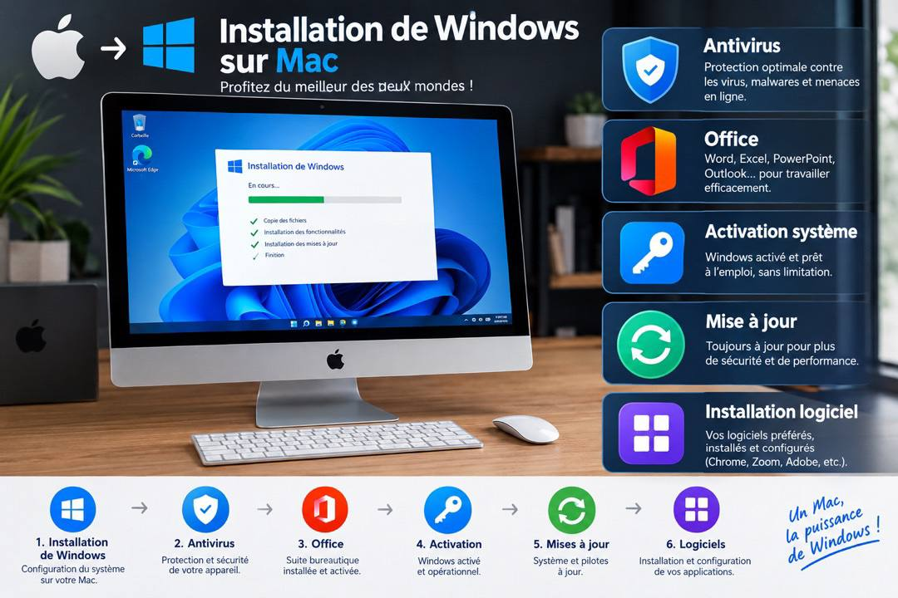
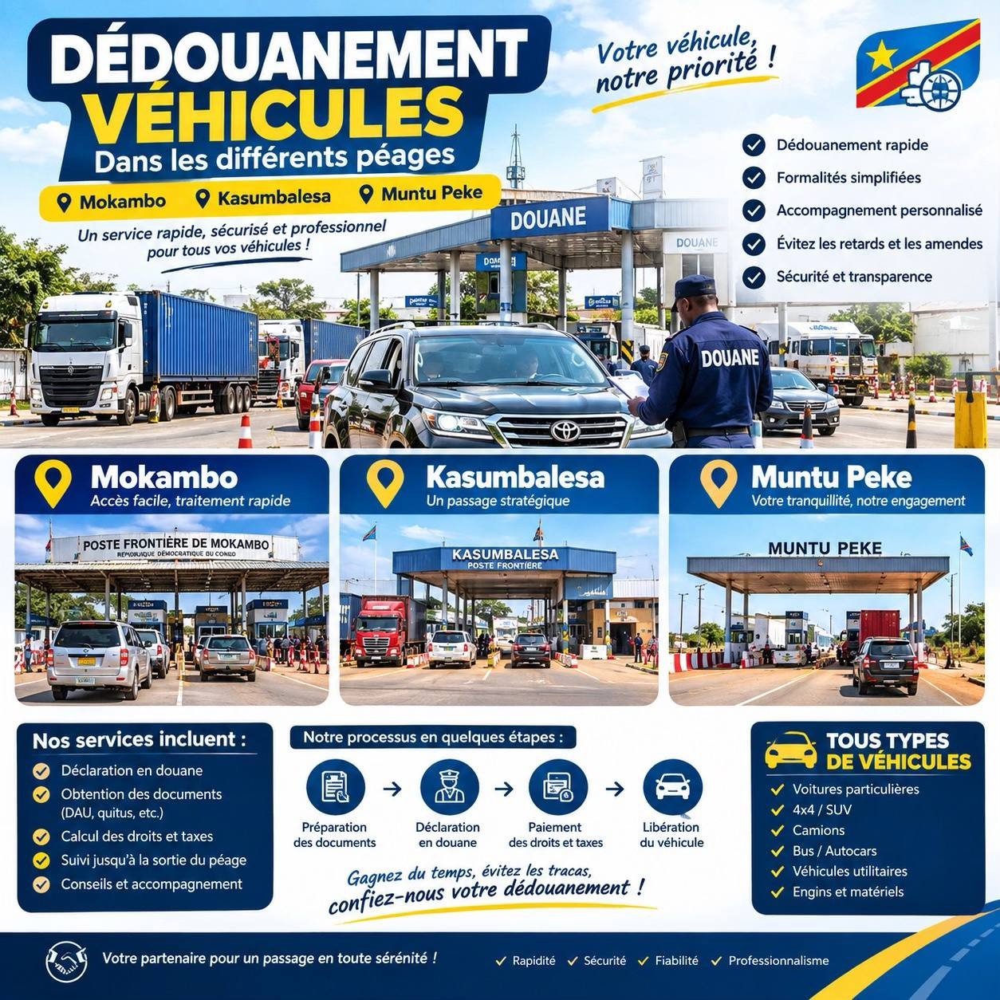

Déverrouillage de téléphones Android et iPhone
Votre téléphone est bloqué par un opérateur, une restriction réseau ou un problème de SIM ? Nous proposons des solutions professionnelles pour les appareils compatibles.
- Samsung, Xiaomi, OPPO, Vivo, Realme, OnePlus
- iPhone : différents modèles
- Déverrouillage réseau / opérateur
- Appareils provenant de différents pays
- Assistance et configuration après déverrouillage
- Service professionnel et sécurisé
Installation de Windows sur Mac

Vous souhaitez profiter de la puissance de Windows sur votre Mac ? Nous vous proposons une installation complète et professionnelle.
- Installation de Windows sur Mac
- Installation et configuration de l’antivirus
- Installation de Microsoft Office
- Activation du système
- Mise à jour de Windows et des pilotes
- Installation et configuration de vos logiciels préférés
Votre Mac, prêt à travailler avec Windows !
Prendre rendez-vousDédouanement de véhicules

Vous venez d’acheter ou d’importer un véhicule ? Nous vous accompagnons dans les différentes étapes pour faciliter le traitement de votre dossier et le passage de votre véhicule aux postes concernés.
Nos principaux points de passage
- Mokambo
- Kasumbalesa
- Muntu Peke
Types de véhicules
Voitures particulières, SUV, 4x4, pick-up, véhicules utilitaires, camions, bus, autocars, engins et matériels roulants.
Nos services
- Préparation et vérification des documents nécessaires
- Accompagnement dans les formalités douanières
- Déclaration en douane
- Obtention et suivi des documents requis
- Évaluation et calcul des droits et taxes selon les procédures applicables
- Suivi du dossier jusqu’à la libération du véhicule
- Assistance et conseils tout au long de la procédure
Contactez-nous pour une estimation des démarches ou pour connaître les documents nécessaires.
Demander une estimationVente de véhicules neufs et d’occasion

Un véhicule neuf ou d’occasion, fiable et adapté à votre budget, provenant des plus grands marchés automobiles du monde.
- Américains : Ford, Chevrolet, Dodge, Tesla, GMC et bien d’autres
- Japonais : Toyota, Honda, Nissan, Mazda, Subaru, Mitsubishi et bien d’autres
- Européens : Mercedes-Benz, BMW, Audi, Volkswagen, Peugeot, Renault, Citroën, Land Rover et bien d’autres
- Chinois : BYD, Geely, Chery, MG, Great Wall, GAC et bien d’autres
Voitures, berlines, SUV, 4x4, pick-up, utilitaires, camions, bus, autocars, motos, engins et matériels.
Nous vous renseignons sur les possibilités de commande, d’importation et de livraison, selon le véhicule recherché.
Demander un devisPièces de rechange automobiles
Une large sélection de pièces pour différentes marques et différents modèles : entretien, réparation ou remise en état de votre véhicule.
Pièces moteur, freinage, suspension, électricité automobile, filtres, huiles et lubrifiants, pneus, accessoires, éclairage, batteries et bien plus.
Comment demander une pièce
Envoyez-nous la marque, le modèle, l’année et, si possible, la référence de la pièce ou ses caractéristiques. Nous pourrons ainsi mieux vous orienter.
Rechercher une pièce